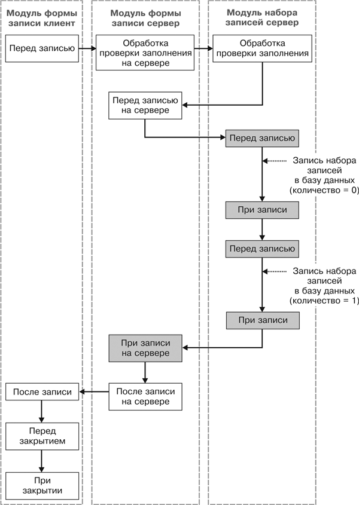

1.2.10.2. Последовательность событий при сохранении данных из формы записи регистра сведений (записать и закрыть)
Рис. 29.17. Последовательность событий при сохранении данных из формы записи регистра сведений
ПРИМЕЧАНИЕ
Заливкой выделены события, выполняющиеся в транзакции записи.
Работа с формой записи регистра сведений осуществляется при помощи объекта РегистрСведенийМенеджерЗаписи.<имя>, который, в свою очередь, использует объект РегистрСведенийНаборЗаписей.<имя>.
Особенности внутренней реализации объекта РегистрСведенийМенеджерЗаписи.<имя> таковы, что в случае сохранения существующей записи регистра сведений обработчики события Перед Записью() и ПриЗаписи() модуля набора записей будут вызваны дважды: сначала для старого набора записей (с количеством записей 0) и затем для нового (с количеством записей 1).
|